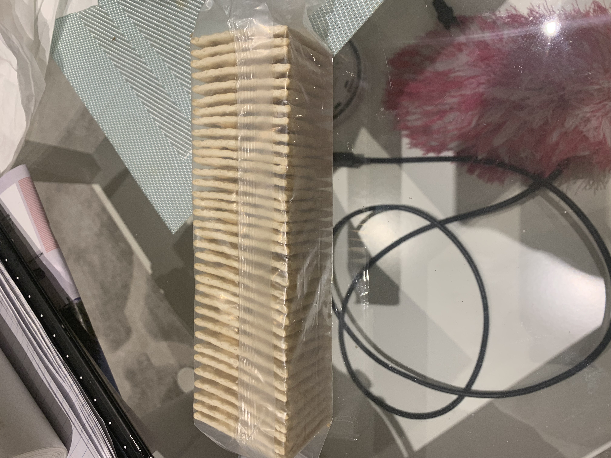

Source: YouTube. (n.d.). YouTube. https://www.youtube.com/watch?v=nQstIbfauyo&t

Photo taken on 2024/11/10 at my couch

Photo taken on 2024/11/10 at my table
Photo taken on 2024/11/10 at my wall
k1feng@torontomu.ca
647-642-3983
Source: YouTube. (n.d.). YouTube. https://www.youtube.com/watch?v=nQstIbfauyo&t
Photo taken on 2024/11/10 at my couch
Photo taken on 2024/11/10 at my table
Photo taken on 2024/11/10 at my wall

Sept 3 2022
Sept 3 2019
PETHS Honour Roll 2022
January 2023
Marketing Technologist
Sept 2022 - April 2026
| Link to YouTube! |
|
| Link to Amazon! |
An HTML element that gives a brief overview of a web page is called a meta description tag. It can appear as a snippet below the web pages title and URL. Based on the search query, the page’s content and the meta description, Google will automatically create a snippet of your site whichever Google determines is the best fit that matches the user’s search query. To get the best results you must make sure your meta descriptions are distinct, descriptive and relevant to your page.
Optimizing your website to rank higher in relevant search results on mobile devices to provide a better user experience for mobile users is known as mobile SEO. This is significant because many people visit websites on their phone and we have to keep in mind that we should optimize the site's design, content and more with mobile in mind
Page speed is a measure of how fast the contents of a page loads. There are multiple ways that this speed is measured in. One of them being Time to first byte (TTFB) and it measures how long it takes for the page to begin loading. Another one of them being first contentful paint (FCP) which measures how long it takes the user to see the first element such as an image. First input Delay is (FID) is another way to measure the speed and it measures how long it takes for the site to respond to a user input such as a button click. The last measurement is onload time which measures how long it takes to fully load everything on your page.
Engagement optimization is one SMO technique that is about posting at the right times to make sure that your audience is more likely to see it. Also asking questions in your posts can also boost engagement and making sure to post the right amount per week can help.
Growth optimization is another SMO technique that is about growing your audience. This can include optimizing your bio as it is one of the first things a new user will see when visiting your page. Another way to increase growth is adding the right hashtags to your posts so that it helps people discover your page.
Conversion optimization is another SMO technique that is about turning visitors into paying customers or users by including a call to action (CTA) and link in your bio so that when visitors click on that link it takes them to your landing page or a store. Another way to turn visitors into paying customers is optimizing your links with UTMS, which allows you to track customer behaviour and see which posts give you the most traffic to your website.
What is a meta description? (+ how to write one & best practices). Semrush Blog. (n.d.). https://www.semrush.com/blog/meta-description/
The Complete Guide to Mobile SEO: 8 Tips & Best Practices. Semrush Blog. (n.d.-a). https://www.semrush.com/blog/mobile-seo/
What is Page Speed & How to improve it. Semrush Blog. (n.d.-c). https://www.semrush.com/blog/page-speed/
Tien, S. (2023, July 19). 13 easy ways to tackle social media optimization. Social Media Marketing & Management Dashboard. https://blog.hootsuite.com/social-media-optimization/